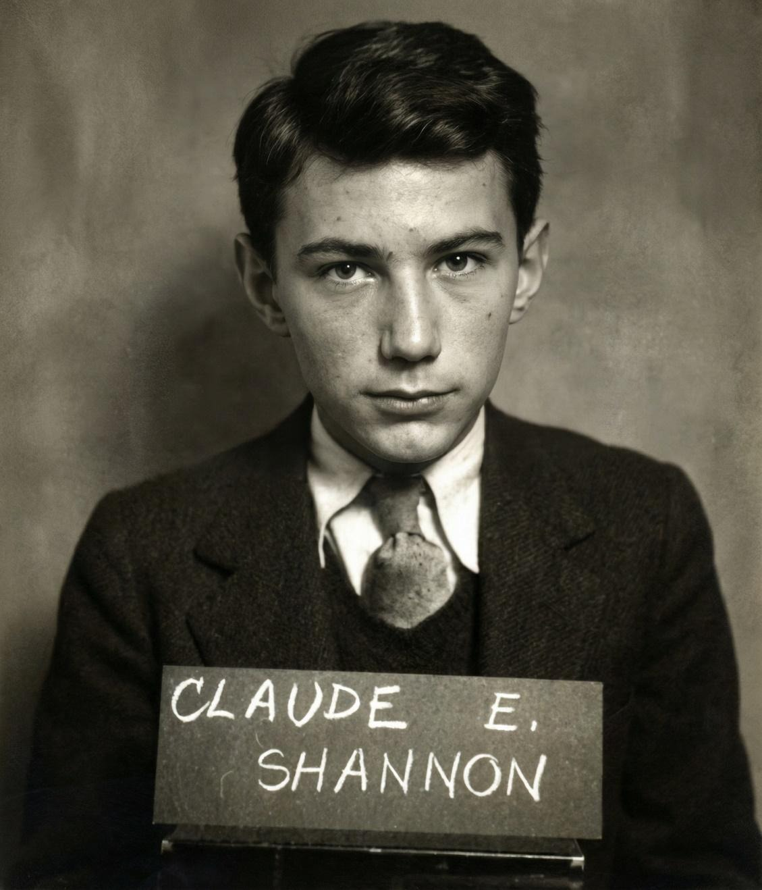

Биография

Дата статьи:
Оглавление:
Ранние годы
Клод Элвуд Шеннон родился в США. В детстве увлекался радиолюбительством, механикой и созданием простейших моделей, кумиром Шеннона был Томас Эдисон (его дальний родственник).
Особое Значение в его работах имело применение математики к задачам связи и передачи данных
Образование
В 1936 году окончил Мичиганский университет, получив две степени бакалавра — по математике и по электротехнике.Продолжил учебу в Массачусетском технологическом институте (МТИ), где работал с мощным аналоговым компьютером — дифференциальным анализатором Вэнивара Буша.
Теория
Релейно-контактные схемы (1937–1938): В своей магистерской диссертации Шеннон доказал, что булева алгебра (логика «истистина/ложь») идеально подходит для описания работы электрических переключателей и реле. Это открытие стало фундаментом для проектирования всех современных цифровых компьютеров и микросхем.
Основы теории информации (1948): Опубликовал эпохальную работу «Математическая теория связи» (A Mathematical Theory of Communication). Он ввёл понятие бита как единицы измерения информации, математически определил энтропию источника сообщений и сформулировал теоремы о пропускной способности каналов связи.
Криптография (1949): Написал работу «Теория связи секретных систем» (Communication Theory of Secrecy Systems), превратившую криптографию из искусства разгадывания шифров в строгую науку.
Информация может рассматриваться как математическая величина.- идея, отражающая подход Шеннона к теории связи.
Последние годы
С 1956 года работал профессором в МТИ, где продолжал вести научную деятельность и преподавать.
Шеннон был специалистом только связи.
Шеннон был известен как гениальный эксцентрик и изобретатель: он строил машины для игры в шахматы, жонглирующий аппарат, шахматного робота, а также кроссовки с реактивными двигателями на мини-моторах.
В последние годы жизни страдал болезнью Альцгеймера.
Скончался в Мелфорде (штат Массачусетс, США).